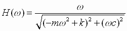

Exercices sur la
vectorisation
Utiliser la vectorisation. Le meilleur choix de boucle est présenté en premier dans les solutions.
- La portée P d'un projectile est donnée par
l'équation :

Demander à l'utilisateur de fournir la valeur de v0. Par exemple, la vélocité d'un projectile de fusil de chasse civil est de 900 m/s. Calculer les valeurs de P en fonction de l'angle θ variant entre 10 et 60 degrés. Tracer le graphique P en fonction de l'angle l'angle θ.
Solution : VectoPortee.m, ForPortee.m, WhilePortee.m
- Les étudiant-e-s de S3 utilisent une petite soufflerie
dans le cadre d'un projet de session. Des mesures sont effectuées pour
évaluer l'efficacité des différentes hélices à produire une poussée en
fonction de l'angle exprimé en radians. Lire la matrice des données
du fichier Helice.dat et tracer le graphique Coefficient de poussée
versus Angle en degrés.
Solution : VectoHelice.m, ForHelice.m, WhileHelice.m
- Tracer le graphique d'un battement produit par deux
ondes. Générer 1000 valeurs de x également espacées entre 0 et
2 pi. Calculer les valeurs correspondantes de y1 = sin(20 x) et de y2 = sin(18 x).
Tracer (y1 + y2) en fonction
de x.
Solution : Vecto2sin.m, For2sin.m, While2sin.m
- Utiliser un filtre logique pour résoudre le problème
suivant :
Lire le fichier A.dat et déterminer combien d'éléments sont supérieurs à 5.
Solution à l'aide d'une boucle comptée : Suggestion, solution
Solution par filtre logique : VectoNsup5.m
Problèmes à
résoudre par la méthode traditionnelle
et la vectorisation
- Consommation d'essence
- Transactions bancaires
- Kuujjuaq
en juillet
Problèmes à
résoudre par la vectorisation (tirée de la session 3, méthode expérimentale)
- Laisser tomber une pierre du haut d’une tour d'une
hauteur inconnue. Quelle est la position (s) de la pierre en
fonction du temps (t) dans les 5 premières secondes. Rédiger
un programme pour tracer un graphique de la position en fonction du temps.
Rappel : s = 0.5 × gt2. Solution : VectoChampoux1.m
- Calculer la fonction de transfert H en vitesse
(mobilité dynamique) d’un système masse (m) ressort (k) et
amortisseur (c) représenté par l’équation suivante :

Tracer H en fonction de la fréquence
angulaire ω entre les valeur 0 et 5 rad/s pour une masse m de
2 kg, une rigidité k du ressort de 18 N/m et un
amortissement c de 2 N s/m.
Solution : VectoChampoux2.m,
- Tracer le rapport Vs / Ve
en dB en fonction de la fréquence pour un filtre électrique passe-bas,
c’est-à-dire le gabarit du filtre.
Le module de la fonction de transfert H(f) = Vs / Ve
où Vs est la tension électrique à la sortie du filtre
et Ve est la tension électrique à l’entrée du filtre.
En fonction de la fréquence, H(f) devient :

où ω représente la fréquence angulaire (rad/s),
R est la résistance électrique,
et C est la capacitance du condensateur.
La relation entre ω et la fréquence f est ω = 2 π f
La valeur de H(f) en dB est H(f)dB = 10 log10 H(f)2
Tracer la courbe H(f) en fonction de f pour des valeurs de ω allant de 0 à 100 rad/s, avec R = 10 ohm et C = 0.001 Farad.
Solution : VectoChampoux3.m